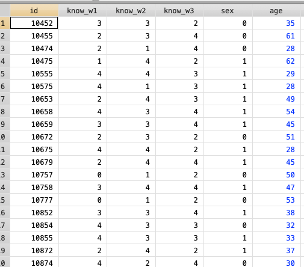
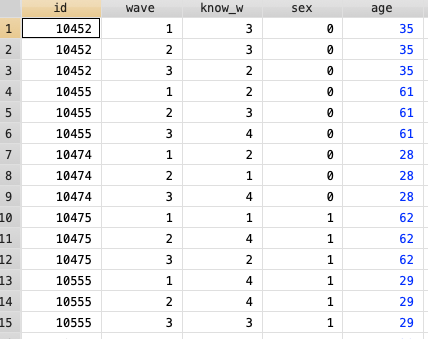

Here we are going to use data sets from published papers. You can retrieve the data from the links below:
Panel data belongs to the category of “longitudinal data”. It is different from cross-sectional data given that it gathers observations from different times. We can distinguish four types of longitudinal data:
Panel data can be in a “long” or “wide” format, and depending of the model we may need to use one or another.
Wide format
The variable “Known” is time variant, that is why we have “known_w1”, “known_w2” and “known_w3”. This variable “known” (political knowledge) has been measured for each individual in three different times. The variable “age” and “sex” for instance, are time “invariant” because haven’t change during this study

Long format
The structure is different than wide format. The observations repeat for each subject as times were gathered. We can observe that the variable know_w is changing in each “wave” (time) and the variable sex or age does not change for each subject.

From wide to long in Stata
From long to wide in Stata
First, lets “upload/open” the data set. There are different packages and ways to do it. Here we use the package rio .
Remember, first install the packages, you can check the list of packages we are using here R packages and data sets.
You can check other ways here:
After installing the package rio we have to “call” it. For that we use library and it has to be done each session.
The function import from the package rio recognizes different extensions such as: “.sav”,“xls”,“xlsx”,“DOB”, “csv”, “SAS”, “dta”.. among others. for more info run: ?import
library(rio) ## calling the package
library(dplyr) ## calling the package
data<-import("./datasets/Kenya.3wave wide.2017.dta")
data=data[,c("sex","id","age","know_w1","know_w2","know_w3")]
## Our object "data" has two dimensions: rows, and columns. We can manipulate it using brackets
## [ rows , columns ]
## We keep the columns we need manipulating the second dimension. - Different than STATA in R we can have more than one dataset "open".
- Remeber: R is an object oriented language.
- An object can be a dataset, a map, an image, etc.
- We can have data (with all the variables),
and data2 with the selected variables "open" at the same time.
- This is an advantage because we do not need to close our enviroment to change dataset.
- On a different note, remember: Packages have functions, and functions have arguments!From wide to long in R
As in STATA this transformation will create a variable wave to point out each time. The values will be: know_w1, know_w2, know_w3.
library(tidyr)
long <- data%>%gather(wave, know_w, -c(id,sex,age))%>%arrange(id) ## Collapse the variables know_w1,know_w2,know_w3 in the new variable know_w
head(long,10)## sex id age wave know_w
## 1 0 10452 35 know_w1 3
## 2 0 10452 35 know_w2 3
## 3 0 10452 35 know_w3 2
## 4 0 10455 61 know_w1 2
## 5 0 10455 61 know_w2 3
## 6 0 10455 61 know_w3 4
## 7 0 10474 28 know_w1 2
## 8 0 10474 28 know_w2 1
## 9 0 10474 28 know_w3 4
## 10 1 10475 62 know_w1 1gather is a tydr function that helps us to reshape the data from wide to long.arrange is a dplyr function that sort the data.%>% it is a convenient way to concatenate all the steps in one line code.head is a base function to show us a glimpse of the data, in this case we asked for the first 10 cases.From long to wide in R
spreadis a tydr function that it does the oposite of gather
wide <- long%>%spread(wave, know_w)%>%arrange(id) #create the variable know_w for each wave and sort the data by id
head(wide,10) # show some data (10 first rows)## sex id age know_w1 know_w2 know_w3
## 1 0 10452 35 3 3 2
## 2 0 10455 61 2 3 4
## 3 0 10474 28 2 1 4
## 4 1 10475 62 1 4 2
## 5 1 10555 29 4 4 3
## 6 1 10575 28 4 1 3
## 7 1 10653 49 2 4 3
## 8 1 10658 54 4 3 4
## 9 1 10659 45 3 3 4
## 10 0 10672 51 2 3 2